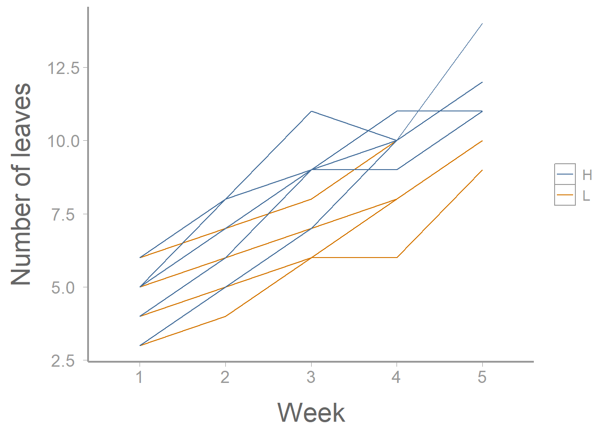
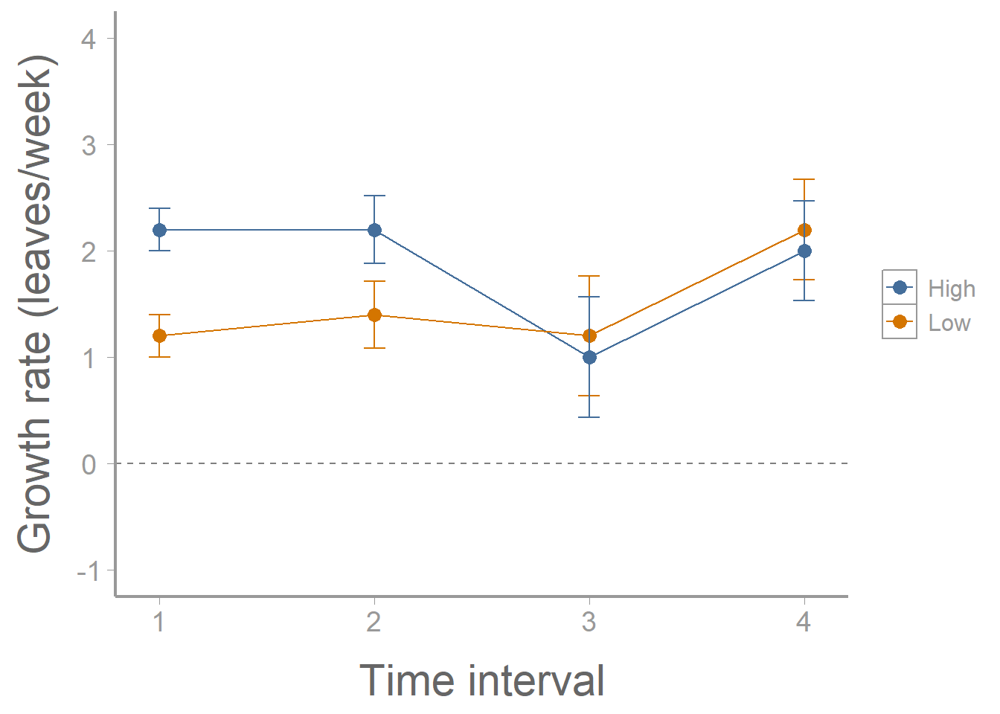

library(FANR6750)
data("plantdata")Lab 12: Repeated measures
FANR 6750: Experimental Methods in Forestry and Natural Resources Research
Fall 2026
Lab 11
Split Plot
The additive model
Using aov() and lme()
Exploring interactions
Multiple comparisons
Today’s topics
Repeated Measures
The additive model
Univariate approach
Adjusted p-values
MANOVA
Multivariate approach
- Profile analysis
Linear mixed effects
Overview
Experiments that use “repeated measures” are those that have the following components:
We randomly assign each ‘subject’ to a treatment
We record the response to the treatment over time
In these cases, we need to think about several sources of variation in the model:
Treatment
Time
Treatment-time interaction
Random variation among subjects
Random variation within subjects
Approaches
As we saw in lecture, there are several ways to analyze repeated measures data.
Univariate approach
One way is to view a repeated measures design as similar to a split-plot design (or nested and crossed)
Because we know that the residuals are correlated, we will need to adjust the p-values (Greenhouse-Geisser or Huynh-Feldt methods)
In
R, somewhat counter-intuitively, you must conduct a multivariate analysis of variance (MANOVA) to obtain these adjusted p-values
Multivariate approach (intervals)
Another way to look at repeated measures data is to perform a MANOVA on the differences
This will allow us to determine during which time intervals the treatment was having an effect (profile analysis)
Mixed effects model with (AR) correlation structure
This can be done using
lme()Involves accounting for serial autocorrelation directly in the model
Preferred for unbalanced designs and complex models
Multiple courses on campus that explore these topics
Univariate Approach
The dataset below contains information on leaf growth by 10 plants subjected to different fertilizer treatments. Leaf growth on each plant was measured weekly for 5 weeks.
Before begining the analysis, we will want to convert some variables to factors.
plantdata$plant <- factor(plantdata$plant)
plantdata$fertilizer <- factor(plantdata$fertilizer)
plantdata$week <- factor(plantdata$week)
str(plantdata)
#> 'data.frame': 50 obs. of 4 variables:
#> $ plant : Factor w/ 10 levels "1","2","3","4",..: 1 1 1 1 1 2 2 2 2 2 ...
#> $ fertilizer: Factor w/ 2 levels "H","L": 2 2 2 2 2 2 2 2 2 2 ...
#> $ week : Factor w/ 5 levels "1","2","3","4",..: 1 2 3 4 5 1 2 3 4 5 ...
#> $ leaves : int 4 5 6 8 10 3 4 6 6 9 ...As always, it helps to visualize the data:
library(ggplot2)
ggplot(plantdata, aes(x = week, y = leaves,
group = plant,
color = fertilizer)) +
geom_path() +
scale_x_discrete("Week") +
scale_y_continuous("Number of leaves")
Additive model
\[ y_{ijk} = \mu + \alpha_i + \beta_j + \alpha\beta_{ij} + \delta_{ik} + \epsilon_{ijk} \]
Where:
\(\mu\): Grand mean
\(\alpha_i\): effect of the ith treatment level
\(\beta_j\): effect of the jth time level
\(\alpha\beta_{ij}\): interaction effect between treatment and time levels
\(\delta_{ik}\): effect of kth subject receiving the ith treatment level
\(\epsilon_{ijk}\): residual error
What would be the hypotheses related to this model?
Which effects are fixed and which are random?
Now let’s fit the univariate model:
aov1 <- aov(leaves ~ fertilizer * week + Error(plant),
data = plantdata)
summary(aov1)
#>
#> Error: plant
#> Df Sum Sq Mean Sq F value Pr(>F)
#> fertilizer 1 16.8 16.82 2.6 0.15
#> Residuals 8 51.7 6.46
#>
#> Error: Within
#> Df Sum Sq Mean Sq F value Pr(>F)
#> week 4 267.4 66.9 158.22 <2e-16 ***
#> fertilizer:week 4 5.1 1.3 3.01 0.033 *
#> Residuals 32 13.5 0.4
#> ---
#> Signif. codes: 0 '***' 0.001 '**' 0.01 '*' 0.05 '.' 0.1 ' ' 1Although this output looks ok, remember that we need to adjust the p-values for the time and interaction effects. Why? In R, this requires reformatting the data and conducting a multivariate analysis of variance (MANOVA).
Specifically, we need to covert the data from the “long” format that it is currently in (each measurement on each plant is contained in its own row) to the “wide” format (each plant is one row, with separate columns for each weekly measurement). There are a number of ways to convert between long and wide formats in R but we’ll use the pivot_wider() function from the tidyr package1:
plantdata_wide <- tidyr::pivot_wider(data = plantdata,
names_from = week,
names_prefix = "week",
values_from = leaves)
head(plantdata_wide)
#> # A tibble: 6 × 7
#> plant fertilizer week1 week2 week3 week4 week5
#> <fct> <fct> <int> <int> <int> <int> <int>
#> 1 1 L 4 5 6 8 10
#> 2 2 L 3 4 6 6 9
#> 3 3 L 6 7 9 10 12
#> 4 4 L 5 7 8 10 12
#> 5 5 L 5 6 7 8 10
#> 6 6 H 4 6 9 9 11A brief aside about MANOVA
For everything that we have done up to this point (and everything we will do later in this course), we have only considered one response variable at a time in a model (univariate models). Other classes of models exist, however, and we will be using one of those here (multivariate models). Multivariate models involve estimating multiple response variables simultaneously.
Remember all the way back to Lecture 2 when we discussed the basic form of linear models. We said that:
\[ y_i \sim N(\mu, \sigma^2) \]
which means that our response variable \((y_i)\) is normally distributed with a mean of \(\mu\) and a variance of \(\sigma^2\).
Now that we have more than one response variable, we will need to modify this statement somewhat:
\[ Y_{ij} = N_i(\mu_i, \Sigma) \]
Here we have modified this statement to represent that there are not just one, but several (i) response variables that we are estimating each with (j) number of observations. As a result, there is not just one expected value, but a vector of expected values (one for each response variable). Additionally, each response variable has its own variance term so we no longer consider only \(\sigma^2\) but instead consider a matrix \(\Sigma\) which contains the variance and covariances of each response variable.
Now we can run the MANOVA:
manova1 <- manova(cbind(week1, week2, week3, week4, week5) ~ fertilizer,
data = plantdata_wide)And the results will contain the adjusted p-values:
anova(manova1, X = ~1, test = "Spherical")
#> Analysis of Variance Table
#>
#>
#> Contrasts orthogonal to
#> ~1
#>
#> Greenhouse-Geisser epsilon: 0.5882
#> Huynh-Feldt epsilon: 0.8490
#>
#> Df F num Df den Df Pr(>F) G-G Pr H-F Pr
#> (Intercept) 1 158.22 4 32 0.0000 0.0000 0.0000
#> fertilizer 1 3.01 4 32 0.0326 0.0666 0.0422
#> Residuals 8A few things to notice here
Remember that adjusting the p-values will only potentially change our conclusions if the original values were significant because his adjustment can only make the p-values larger.
These adjusted p-values are only used for the time and treatment:time interaction. Notice how
Rlabels these.Rhas labeled the ‘week’ term asInterceptand the fertilizer:week interaction asfertilizer.
Profile analysis
A profile analysis requires calculating the differences in growth during each time interval (i.e., the number of leaves grown each week):
manova2 <- manova(cbind(week2 - week1, week3 - week2, week4 - week3, week5 - week4) ~ fertilizer, data = plantdata_wide)
summary.aov(manova2)
#> Response 1 :
#> Df Sum Sq Mean Sq F value Pr(>F)
#> fertilizer 1 2.5 2.5 12.5 0.0077 **
#> Residuals 8 1.6 0.2
#> ---
#> Signif. codes: 0 '***' 0.001 '**' 0.01 '*' 0.05 '.' 0.1 ' ' 1
#>
#> Response 2 :
#> Df Sum Sq Mean Sq F value Pr(>F)
#> fertilizer 1 1.6 1.6 3.2 0.11
#> Residuals 8 4.0 0.5
#>
#> Response 3 :
#> Df Sum Sq Mean Sq F value Pr(>F)
#> fertilizer 1 0.1 0.1 0.06 0.81
#> Residuals 8 12.8 1.6
#>
#> Response 4 :
#> Df Sum Sq Mean Sq F value Pr(>F)
#> fertilizer 1 0.1 0.1 0.09 0.77
#> Residuals 8 8.8 1.1Why are there only four responses shown here even though there are five weeks in the study?
What do these responses tell us? What does it mean that the first is significant while the others are not?
We can also plot the growth rates. First, calculate mean growth rate for each time interval:
leavesMat <- plantdata_wide[,3:7]
growthMat <- leavesMat[,2:5] - leavesMat[,1:4]
colnames(growthMat) <- paste("interval", 1:4, sep=".")
(lowFertilizer <- colMeans(growthMat[1:5,]))
#> interval.1 interval.2 interval.3 interval.4
#> 1.2 1.4 1.2 2.2
(highFertilizer <- colMeans(growthMat[6:10,]))
#> interval.1 interval.2 interval.3 interval.4
#> 2.2 2.2 1.0 2.0Next, calculate the standard errors for these growth rates:
SE <- sqrt(diag(stats:::vcov.mlm(manova2)))
SE <- SE[names(SE)==":(Intercept)"] # Only use "intercept" SEs
unname(SE) ## Ignore the names
#> [1] 0.2000 0.3162 0.5657 0.4690Now, create a data frame and plot the results:
growthDF <- data.frame(interval = rep(1:4, 2),
fertilizer = rep(c("Low", "High"), each = 4),
growth = c(lowFertilizer, highFertilizer),
SE = rep(SE, 2))
ggplot(growthDF, aes(x = interval, y = growth, color = fertilizer)) +
geom_path() +
geom_point() +
geom_errorbar(aes(ymin = growth - SE, ymax = growth + SE), width = 0.1) +
geom_hline(yintercept = 0, linetype = "dashed", color = "grey50") +
scale_x_continuous("Time interval") +
scale_y_continuous("Growth rate (leaves/week)", limits = c(-1, 4))
What kinds of interpretations can we make from this plot? What does it mean that the error bars do not overlap for some time intervals (or does it necessarily mean anything)? What does the horizontal dotted line represent and what would does it mean that all of the estimated values are above that line?
Assignment (optional)
A researcher wants to assess the effects of crowding on the growth of the dark toadfish (Neophrynichthys latus). Fifteen fish tanks are stocked with three densities of toadfish. Five tanks have low density (1 fish), 5 tanks have medium density (5 fish), and 5 tanks have high density (10 fish). In each tank, the weight of one “focal fish” is recorded on 6 consecutive weeks. The data can be loaded using:
library(FANR6750)
data("fishdata")Conduct the repeated measures ANOVA using
aov(). Calculate the adjusted p-values using the Huynh-Feldt method. Does the effect of density on growth change over time?Conduct a profile analysis. In which time intervals is the effect of density on growth rate significant?
Put your answers in an R Markdown report. Your report should include:
A well-formatted ANOVA table (with header); and
A publication quality plot showing the effects of crowding on the toadfish weight across each of the time intervals in the study. The figure should have a descriptive caption and any aesthetics (color, line type, etc.) should be clearly defined
You may format the report however you like but it should be well-organized, with relevant headers, plain text, and the elements described above.
As always:
Be sure the output type is set to:
output: html_documentBe sure to include your first and last name in the
authorsectionBe sure to set
echo = TRUEin allRchunks so we can see both your code and the outputPlease upload both the
htmland.Rmdfiles when you submit your assignmentSee the R Markdown reference sheet for help with creating
Rchunks, equations, tables, etc.See the “Creating publication-quality graphics” reference sheet for tips on formatting figures
Footnotes
to run this function, we need to specify which column in the original data frame contains the column names (
names_from) and which column contains the values that will go in the new columns (values_from). We can also (optionally) specify a prefix to add to each column name so that we don’t end up with numeric column names. For more help, see?pivot_wider↩︎